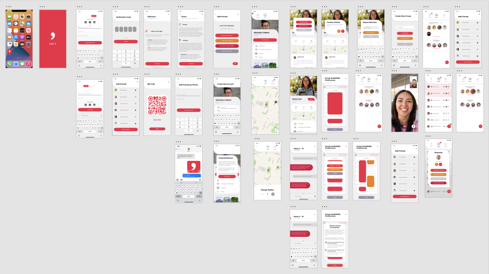
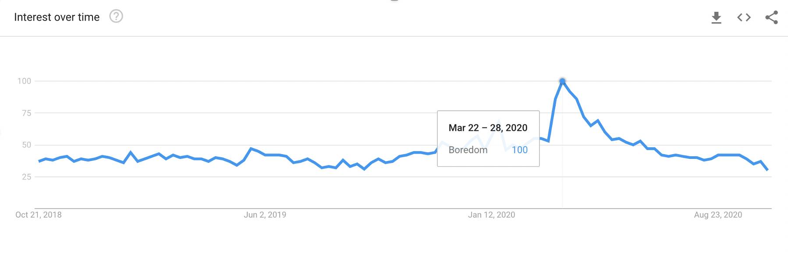
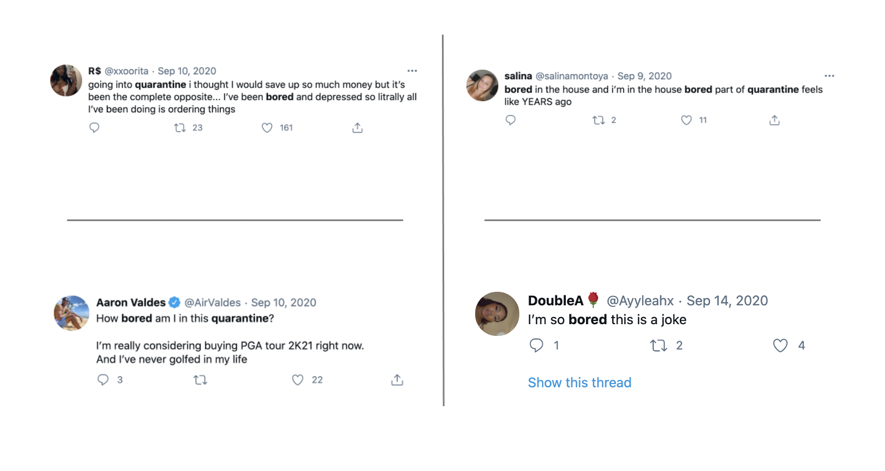
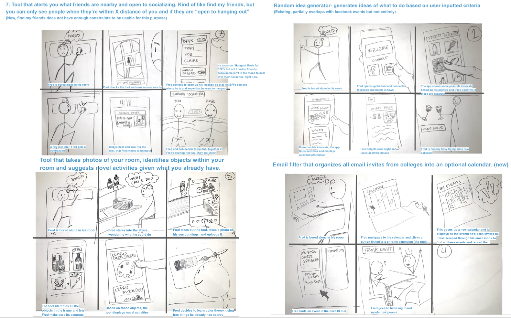
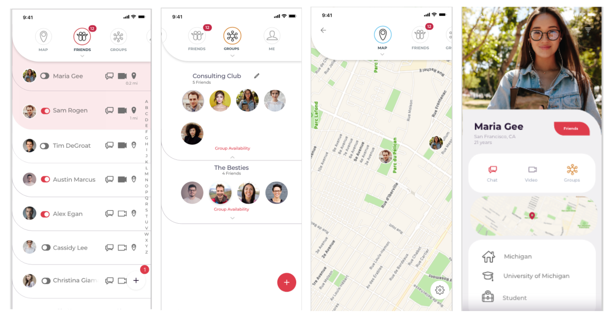
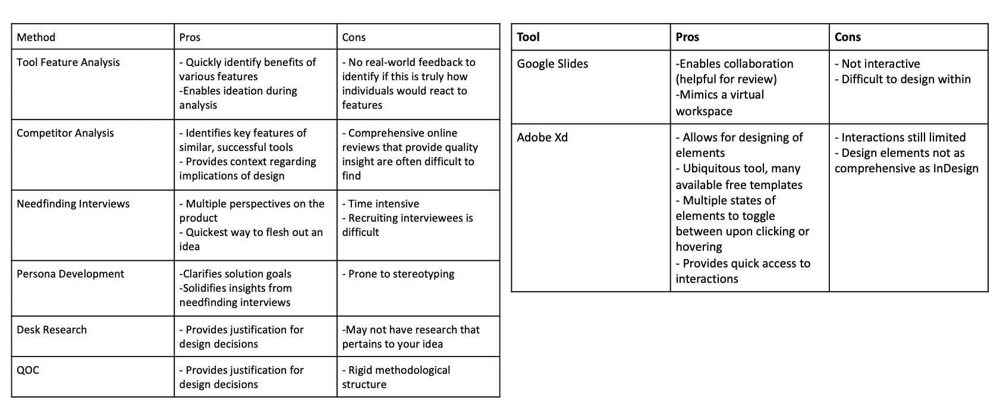

Let's
1. Overview
During quarantine, I thought I often felt what I thought was boredom. I wanted to explore that feeling as a part of my Interaction Design course, SI 582. I set out to create the fix for student boredom, but what I found through user testing was that the feeling I was feeling, wasn't the same experience as all users. Users expressed a restlessness and sense of social isolation, not boredom, so I sought to create a tool that overcame the barriers to social interaction I observed in my research. This culminated in an application design prototype for product called Let's.
2. Research & Key Insights
Study Overview
I set out in search of understanding boredom. I started by gathering an understanding of the larger space to see if it was top of mind for people. I searched twitter and google trends to look for patterns.
While I was able to find increased searches of boredom around the onset of pandemic, searches declines quickly after. I used twitter advanced search to look at recent mentions of boredom. I was able to find uses regarding the pandemic like below, but the overwhelming majority of mentions had no relationship to quarantine.

I decided to get a better understanding of the problem, I'd need to go talk to potential users.
I found wrote an interview script to use as inspiration, and set out to perform need-finding interviews.
I interviewed 6 students. As I interviewed, I quickly realized no one else shared my feeling of boredom.
So, I tried to pivot. I knew the feeling I had was relatable so I tried engaging in conversations with users to
understand this feeling and it turns out, the core experience was social isolation, not boredom. Once I realized this,
I shifted my questions and mindset to understand why students weren't feeling connected.
From my interviews what I found was:
1. Not all students feel socially isolated.
Many students feel they have the tools to reach out to others
to engage socially, or if environmental factors prohibit that (say its 3am and everyone's asleep), they seek out coping mechanisms
like media consumption to curb the feeling.
2. Students who do feel socially isolated often feel anxious, restricted by physical barriers, social barriers, or schedules.
Physical barriers can exist for students who live in an isolated part of campus which can make it harder for friends to visit and for
spontaneous social interaction to occur. A commuter student expressed that it was difficult to make friends because they weren't always actively
on campus. They felt like it was a burden to ask classmates they thought were cool to drive off campus to hangout, so they only hungout with on-campus
friends when they were able to drive, which restricted social drinking activities and made them feel more isolated.
Social barriers appeared to stem from a lack of confidence in a friendship. When asked why they wouldn't call up a friend when they're feeling lonely, one user said
I don't know... I feel like we don't have that kind of friendship. I'm not sure if that's something that they would want to do. I know I would want to but I don't know if they would feel the same.
While some may easily just pick up the phone to find out, this user expressed that the fear of rejection prevented them
from even trying. Designing to reduce fear of rejection became a primary goal in my final solution with this user in mind.
Finding time withing busy schedules to meet up with a friend can sometimes feel impossible. One user expressed they often only have 15-30 minute breaks
due ot their rigorous courseload. They felt it was futile to ask someone to hangout for only 15 or 20 minutes since they couldn't devote the time they felt the other person deserved, so they never asked.
This person didn't even give the friend the option to say yes or no, and similar to the previous user, never asked to hangout.
With this in mind, I wanted to design something that reduced the pressure on hanging out so it was easier for students to feel comfortable sneaking socialization into their short breaks.
Underlying all three restrictions is a social anxiety that prevented users from their end goal: connecting. I wanted to use this to design
a tool that reduced the anxiety around social interaction. I wanted to find a way to allow users to connect close to their physical locations, to give users
clarity about their friendship status with others, and reduce the barriers to quick hangouts.
3. Sketching and Prototyping
Sketching

Before pivoting from boredom to soical isolation, I came up with ~25 ideas to relieve boredom, sketched them out, and created short
storyboards for my favorite 10 ideas. After the pivot towards reducing social isolation, I was able to still use elements and themes explored in these
sketches on my new mission.
I re-sketched out ideas and created personas based on my user interviews. Utilizing those, I created a common storymap for all users and
built a full user flow diagram.
I received feedback from professors and students and incorporated all that information into my wireframing process. The final deliverable was a medium fidelity prototype on adobe XD, aimed at reducing social anxieties to connect people.
4. Final Solution
Application Overview
The app helps reduce anxiety by passively letting people know where they stand with people. The application connects you to people through friends that you can add via phone numbers, VR code, and facebook friends. You can also organize those friends into groups. The application helps connect friends through video chat and geolocation if, and only if your friend has indicated in their preferences that they are free and willing to hangout. Users can toggle when they are free and to whom they are free individually from friend to friend, or across groups of people.
How This Addresses the Research
I tried to approach those three main concerns in the following ways:
Social barriers- I made it mandatory to specify when you want to hangout and are free to individuals to address the anxiety around the social barriers. It addresses this anxiety by letting people passively know their friends want them to hangout. If you see a friend on your map, it means they have free time and actively want to see you. By stressing the urgency of actively hanging out, if you don’t see a friend, it doesn’t mean they don’t want to hangout, it could just mean they are busy. This helps reduce social rejection as well.
Physical barriers - While an application can’t help transport people, it can help connect people who are already nearby. The geolocation feature shows who is within a walkable distance. It also incorporates a video chat feature so users can connect if they are off campus.
Time constraints- Users were worried their friends would feel bad if they didn’t have a long time to attend to a friend. The app addresses this in two ways 1.The geolocation feature allows friends to connect nearby, cutting down on commuting time. 2. You can connect your calendar to show breaks in your schedule and let friends know you’re free during those breaks for added ease.
5. Takeaways
What I learned
I have included a table of tools and methodologies learned during this project. A lot more work than what is on this web page went into exploring this idea, so there may be some tools or analyses listed on this table that you haven't heard mentioned yet.
What I enjoyed
My favorite thing to do is pivot. I think being forced to take what you have and build something new from it's scraps is what breeds the most interesting and innovative ideas. Exploring the feeling of boredom and realizing it was more akin to social isolation that stemmed from social anxieties helped to clarify not only the project's goals but also my own undersatnding of the issue. I was able to empathize as a user and let that guide my research.
What I wished I had done differently
I wish I had done more desk research on social anxiety. I was limited by time as the pivot required that I re-do multiple assignments prior. While I enjoy the solutions I came up with, I don't have evidence for how or why they reduce social stress. To me, I can play out how these features would be used and I can see where they'd be useful, but without a full pilot test or desk research to confirm my assumptions, it's difficult to convince others of the value of the tool, too.